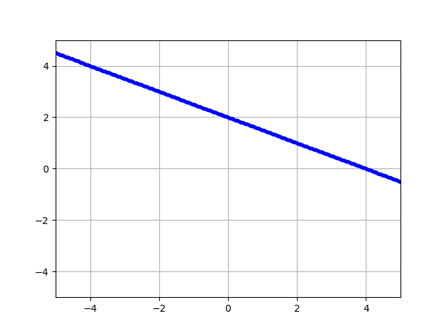
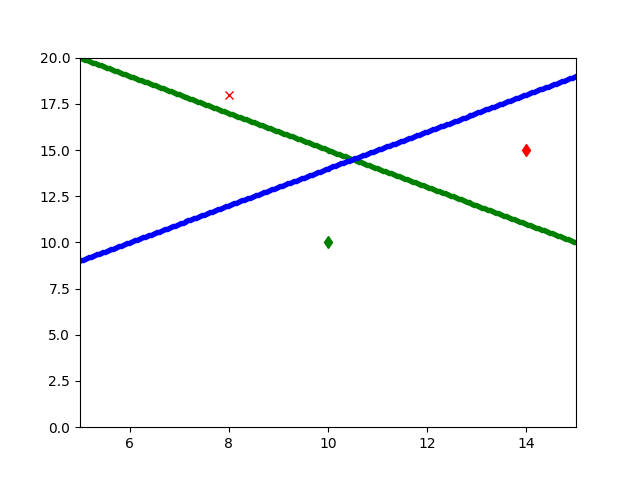

Görüntü işlemede birleşme noktaları ufuk çizginde, dış dünyadaki genel yapının “aktığı’’ yer olarak tanımlanabilir. Mesela önümüzde düz giden bir yol var ise o yolun ufuk çizgisine değdiği yer birleşme noktasıdır. Birleşme noktalarının bir nokta olarak ortaya çıkmasının sebebi 3D-2D dönüşümüyle alakalı; üç boyutta parallel olan çizgilerin iki boyuta (diijal kameraya) yansıması onlarin tek noktada birleşmesine sebep olur.


Üstte bazı örnekler görüyoruz. Soldaki imajda birleşme noktası tren raylarının görülebilen son noktasıdır. Ortadaki imajda kırmızı çizgilerin birleştiği yer. Bir resimde birden fazla birleşme noktası da olabilir, mesela sağdaki resimde bu örnek görülüyor. Birleşme noktası imaj dışına da düşüyor olabilir, yine sağdaki resim.
Görüntülerde derinliği anlamak, bu konuyu incelemek Rönesans’da başladı. Bu çağda görüntünün ne olduğu ciddi şekilde araştırıldı, ressamlar perspektifi dikkate alıp, birleşme noktalarını seçip ona göre resimlerini yapmaya başladılar. Mesela ünlü ressam Raphael’ın Atina Okulu adlı resmi [4].

Bu resimde birleşme noktası filozof Sokrat’ın sol elinde, resimdeki tüm objeler bu noktaya göre şekillendirilmiş.
Birleşme Noktalarını Bulmak
Görüntü işleme çerçevesinde verili herhangi bir görüntüde birleşme noktalarını bulmak faydalı oluyor; bu noktalar robotik, yer bulma amaçlı olarak kullanılabiliyor. Çünkü eğer görüntüdeki genel yapının nereye doğru aktığını bulabiliyorsak, oraya doğru bir fiziksel gidiş de vardır demektir, ve otonom hareket eden robotlar bu bilgiyi kullanabilirler, ya da bu bilgi diğer ek görüntü işleme adımları için bir girdi olabilir. Belki elde tutulan kamera sürekli sallanıyordur, ama birleşim noktasını her görüntüde doğru bulabiliyorsak bu bu bilgiyi bir stabilizasyon amaçlı kullanabiliriz.
Hesap icin ilk aşama görüntüdeki ana çizgileri bulmak. Ana çizgileri bulmak artık görüntü işlem biliminde demirbaş haline gelmiş Canny kenar bulucusu ve Hough transformu ile yapılabilir.
from PIL import Image, ImageDraw
from skimage.transform import probabilistic_hough_line
from skimage.feature import canny
from skimage import data
import pandas as pdim1 = Image.open('in1.jpg').convert('L')
edges1 = canny(np.array(im1), 2, 1, 25)
lines1 = probabilistic_hough_line(edges1, threshold=10, line_length=30,line_gap=3)
im1 = Image.open('in1.jpg')
for line in lines1:
p0, p1 = line
plt.plot((p0[0], p1[0]), (p0[1], p1[1]))
plt.imshow(im1)
plt.savefig('vision_40lines_08.png')
im2 = Image.open('in2.jpg').convert('L')
edges2 = canny(np.array(im2), 2, 1, 25)
lines2 = probabilistic_hough_line(edges2, threshold=10, line_length=30,line_gap=3)
im2 = Image.open('in2.jpg')
for line in lines2:
p0, p1 = line
plt.plot((p0[0], p1[0]), (p0[1], p1[1]))
plt.imshow(im2)
plt.savefig('vision_40lines_09.png')
Hough transformuna verilen threshold,
line_length, line_gap parametreleri
algoritmanın hassasiyetini ayarlıyor, mesela line_length
bulunan çizgilerin en az kaç piksel olması gerektiğini tanımlıyor.
Bir sonraki adım bu ana çizgileri alıp onların birleşebilecek olanlarını seçmek, ve en çok birleşim yapabilenleri üzerinden bir birleşim noktası bulmak. Ama önce iki boyutta çizgiler nasıl formüle edilir, ve kesişim nasıl bulunur, onu görelim.
Çizgiler
Bir çizgiyi \(ax+by+c = 0\) genel formülüyle gösterebiliriz. \(a,b,c\) parametreleri özgün olarak iki boyutta bir çizgiyi tanımlayabilir, bu formülü tatmin eden sonsuza kadar tüm \(x,y\) değerleri çizginin parçasıdır.
Üstteki formülü lise matematiğinden bilinen \(y=mx+i\)’e ilişkilendirmek için, ki \(m\) eğim (slope) ve \(i\) kesi (intercept),
\[ ax+by+c = 0 \]
\[ by = -ax -c\]
\[ y = -a/b x -c/b\]
Yani eğim \(m=-a/b\), kesi \(-c/b\). Bu bilgiyi vektörel bir yön tanımlamak için şöyle düşünebiliriz, eğime göre \(x\) yönünde atılan her \(b\) adımı için \(y\) yönünde \(-a\) adımı atılacağına göre (ya da \(-b\) için \(a\) adımı), vektör alttaki gibi olur.

Birkaç örneği grafikleyelim,
import pandas as pd
def plot_line(a,b,c):
# Formula is ax+by+c = 0
x = np.linspace(-20,20,1000)
m = -a/b # slope
i = -c/b # intercept
y = m*x + i
plt.plot(x,y,'.')
l1 = np.array([1,1,-5])
plot_line(l1[0],l1[1],l1[2])
l2 = np.array([2,-1,10])
plot_line(l2[0],l2[1],l2[2])
plt.xlim(-10,10)
plt.ylim(0,30)
plt.grid(True)
plt.savefig('vision_40lines_01.png')
Homojen Kordinatlar, Kesişim
Homojen kordinatların \((u,v,1)\) şeklinde olduğunu hatırlayalım, ki \((uw,vw, w)\) aynı kordinat oluyordu, çünkü bir homojen kordinatin 3. hücresinde ne varsa tüm kordinat degerlerini onunla bölebiliyorduk [1].
Kartezyen düzlemde çizgi denklemi \(ax+by+c=0\)’i şu şekilde görebiliriz, \(x,y\) çizgi üzerinde birer noktadır, homojen bağlamda \(x=u/w\), \(y=v/w\) olsun, o zaman \(w\) ile çarparak, yani bu homojen \((u,v,w)\) noktasını ileri / geri hareket ettirerek tüm çizgiyi kapsayabiliriz. Bu tanımları Kartezyen çizgi denklemine geri sokarsak, çizgiyi homojen olarak tanımlayabileceğimizi görürüz,
\[ au + bv + w = 0\]
Bu denklem homojen çizgi denklemi olarak biliniyor. Yani bir çizgiyi
\[ \ell = (a,b,c)\]
homojen kordinatlarıyla tanımlayabiliriz. \(\ell\)’in sıfır olmayan herhangi bir katı aynı çizgiyi tanımlayacağına göre \(\ell\)’yi bir yön olarak düşünmek te mümkün, ve çizgi için yönden başka bir şeye zaten ihtiyaç yok.
Tüm bu tanımlara göre \(p=(u,v,w)\)’nin homojen kordinatta bir nokta olduğunu düşünelim. O zaman \(p\)’nin bir çizgi üzerinde olması demek, \(p\) ve \(\ell\)’nin noktasal çarpımının sıfır olması demektir,
\[ p \cdot \ell = 0\]
Değil mi? Çünkü
\[ au + bv + cw = \left[\begin{array}{r} a \\ b \\ c \end{array}\right] \cdot \left[\begin{array}{r} u \\ v \\ w \end{array}\right] = 0 \]
O zaman iki çizginin kesişimini şöyle buluruz. Diyelim ki iki çizgi \(\ell_1\) ve \(\ell_2\)’nin kesişme noktası \(p\), o zaman
\[ \ell_1 \cdot p = 0, \qquad \ell_2 \cdot p = 0\]
ki herşey homojen kordinatta. Üstteki tanımlardan şu sonuç çıkıyor, \(p\) hem \(\ell_1\) hem de \(\ell_2\)’ye dikgendir. İki vektöre dikgen olan üçüncü bir vektörü nasıl buluruz? Çapraz çarpımla! Yani \(p = \ell_1 \times \ell_2\). O zaman kesişim noktasının hesabı gayet basit, mesela üstteki örnek için
p = np.cross(l1,l2)
print (p / p[2])[-1.66666667 6.66666667 1. ]Hakikaten de kesişim noktasının \(x=-2,y=6\)’da olduğunu görebiliyoruz.
Aynı mantıkla iki noktadan geçen bir çizginin formülünü bulmak için şunun doğru olduğundan hareket edebiliriz,
\[ p_1 \cdot \ell = 0, \qquad p_2 \cdot \ell = 0\]
O zaman bilinen iki noktadan geçen çizgi bu iki noktanın (homojen kordinatındaki) çapraz çarpımıdır!
Örnek
(3,1) ve (-4,5)’den geçen çizginin formülü nedir?
Cevap
Bu formül
\[ \ell \cdot (3,1,1) = 0\]
\[ \ell \cdot (-4,5,1) = 0\]
denklemlerini tatmin etmelidir. O zaman çizgi
print (np.cross(np.array([3,1,1]), np.array([-4,5,1])))[-4 -7 19]olacaktır. Yani çizgi formülü \(4x + 7y - 19 = 0\).
Yol bulmak amaçlı yol sonunu gösteren kesişim noktasını bulmak için bir algoritma şöyle olabilir,
Görüntüdeki yeterince büyük olan tüm çizgileri bul (çizgiler Hough transformdan başlangıç bitiş noktaları ile tanımlı, bunları çapraz çarpımı ile çizgi formülüne çevir).
Tüm çizgiler arasındaki ikili kombinasyonlara teker teker bak, ve aralarındaki kesişim noktasını hesapla.
İmajın orta noktasına uzak olan noktaları ele.
Ortalamayı al.
import itertools
def vanish(fin):
im = Image.open(fin).convert('L')
edges = canny(np.array(im), 2, 1, 25)
lines = probabilistic_hough_line(edges, threshold=20, line_length=30,line_gap=3)
im = Image.open(fin)
new_lines = []
for line in lines:
p1 = np.array([1,1,1]); p1[:2] = line[0]
p2 = np.array([1,1,1]); p2[:2] = line[1]
new_lines.append(np.cross(p1,p2))
res = []
for (l1,l2) in itertools.product(new_lines,new_lines):
if np.all(l1==l2): continue
inters = np.cross(l1,l2)
inters = inters / (inters[2]+1e-5)
if np.sqrt((160-inters[0])**2 + (120-inters[1])**2) < 100:
res.append(inters)
res = np.array(res)
vanish = res.mean(axis=0)
return im, lines, vanishim, lines, vp = vanish('in1.jpg')
for line in lines:
p0, p1 = line
plt.plot((p0[0], p1[0]), (p0[1], p1[1]))
plt.plot(vp[0], vp[1],'rd')
plt.imshow(im)
plt.savefig('vision_40lines_11.png')
im, lines, vp = vanish('in2.jpg')
for line in lines:
p0, p1 = line
plt.plot((p0[0], p1[0]), (p0[1], p1[1]))
plt.plot(vp[0], vp[1],'rd')
plt.imshow(im)
plt.savefig('vision_40lines_12.png')
Farklı birleşim nokta hesapları [2, sf. 21]’de bulunabilir.
Hiperdüzlemler
Hiperdüzlemler ve yarı uzaylar (halfspace) konusuna da bakalım. Bu kavram Destek Vektör Makinaları tekniği için çok önemli.
Bir düzlemi tanımlamak için bir vektör yeterli, mesela 2 boyutta düşünelim, \(\left[\begin{array}{cc}1 & 2 \end{array}\right]^T\) vektörü, bu vektöre dikgen olan tüm vektörlerin uzayı sonsuza giden bir çizgi oluşturur. Örnek [4, sf. 378], orijinden geçen çizgi.

Bu çizgi \(x + 2y = 0\), $w^Tu = 0 $ olarak ta temsil edilebilir, vektör çarpım sonucunun sıfır olduğuna dikkat, bu dikgenlikten ileri geliyor. İkinci çarpımda notasyon değişti, \(u = \left[\begin{array}{cc}x & y \end{array}\right]^T\), ve \(w = \left[\begin{array}{cc}1 & 2 \end{array}\right]^T\) oldu, ama sonuç aynı.
Bu çizginin tüm uzayı ikiye böldüğü de söylenebilir, ortaya iki yarı uzay ortaya çıkartarak.
Yarı uzayın nasıl tanımlandığını anlamadan önce, eğer \(x + 2y = 0\)’i 2 yukarı çıkartmak istesek, \(x + 2y = 4\) kullanabileceğimizi görelim, grafikte görüldüğü gibi. O zaman \(x + 2y = 4\) çizgisinin böldüğü yarı uzaylar,
\[ x = 2y \ge 4 \]
\[ x = 2y < 4 \]
olarak tanımlanabilir, çünkü bir çizginin üstünde ya da altında kalmak üstteki şekilde eşitsizlikler olarak ortaya çıkartacaktır.
Bazı örnekler, ve grafikleme rutinleri görelim,
def plot_sep(w,color='blue'):
Q = np.array([[0, -1],[1, 0]])
x = np.linspace(-20,20,1000)
w2 = np.dot(Q,w[:2])
m = w2[1]/w2[0]
y = m*x + (-w[2]/w[1])
plt.plot(x,y,'.',color=color)
a = np.array([1., 2., -4])
plot_sep(a)
plt.xlim(-5,5)
plt.ylim(-5,5)
plt.grid(True)
plt.savefig('14_4.png')

Noktaların çizginin neresine düştüğünden hareketle bazı \(wx + b\) sonuçları
a1 = np.array([2., 2., -50.])
plot_sep(a1,color='green')
a2 = np.array([-1., 1., -4.])
plot_sep(a2,color='blue')
pt = np.array([10.,10.,1.])
plt.plot(pt[0],pt[1],'gd')
print (np.dot(a1,pt))
print (np.dot(a2,pt))
pt = np.array([14.,15.,1.])
plt.plot(pt[0],pt[1],'rd')
print (np.dot(a1,pt))
print (np.dot(a2,pt))
pt = np.array([8.,18.,1.])
plt.plot(pt[0],pt[1],'rx')
print (np.dot(a1,pt))
print (np.dot(a2,pt))
plt.xlim(5,15)
plt.ylim(0,20)
plt.savefig('14_5.png')-10.0
-4.0
8.0
-3.0
2.0
6.0

Kaynaklar
[1] Jia, Problem Solving Techniques for Applied Computer Science, http://web.cs.iastate.edu/~cs577/
[2] Hoiem, Representations and Techniques for 3D Object Recognition and Scene Interpretation
[3] Strang, Linear Algebra and Its Applications, 4th Ed
[4] Taylor, Kubovy, The Role of Perspective, http://www.webexhibits.org/sciartperspective/perspective3.html